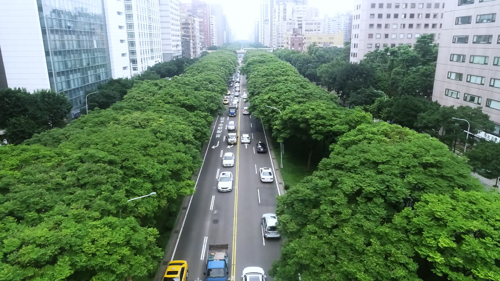
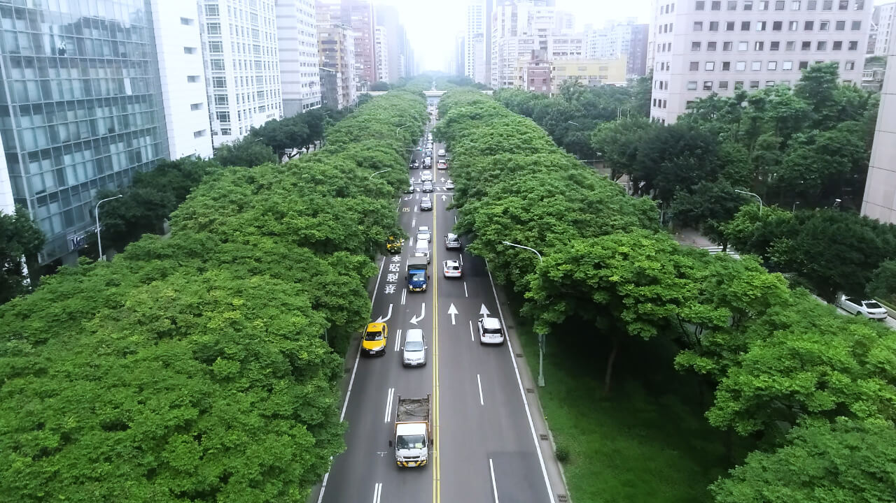
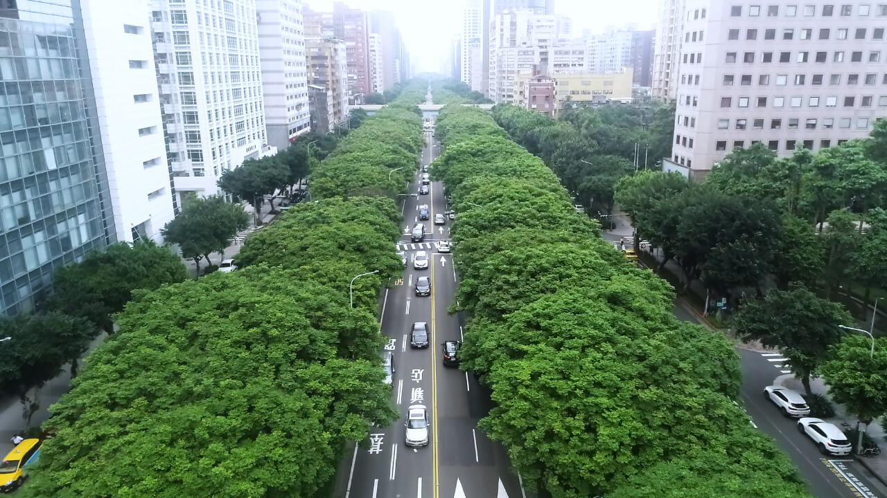
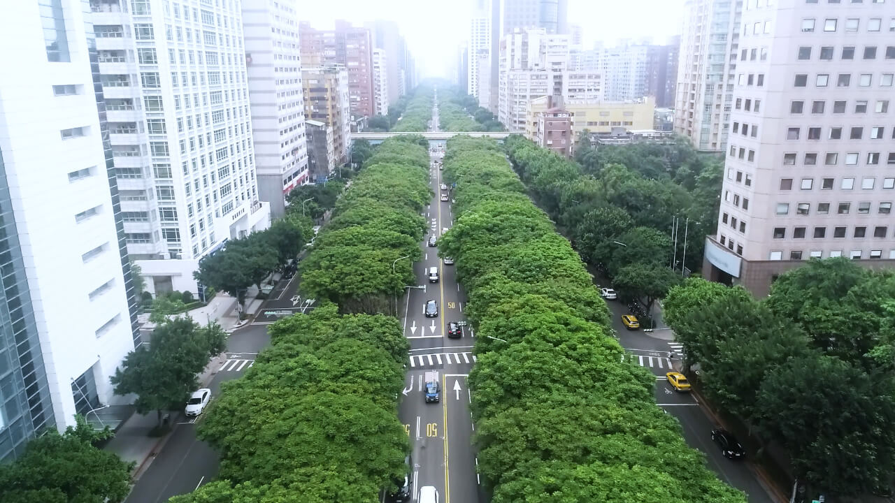
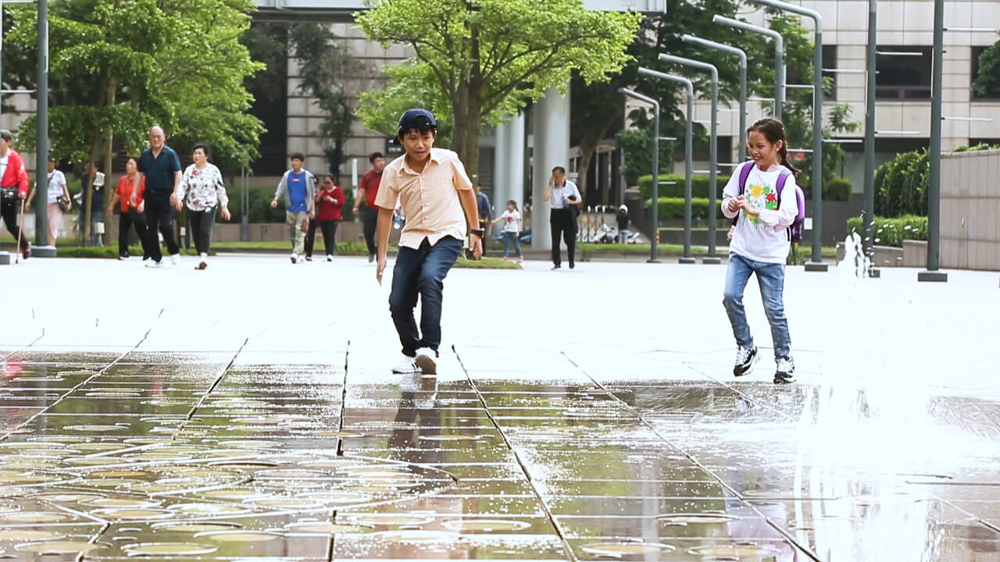
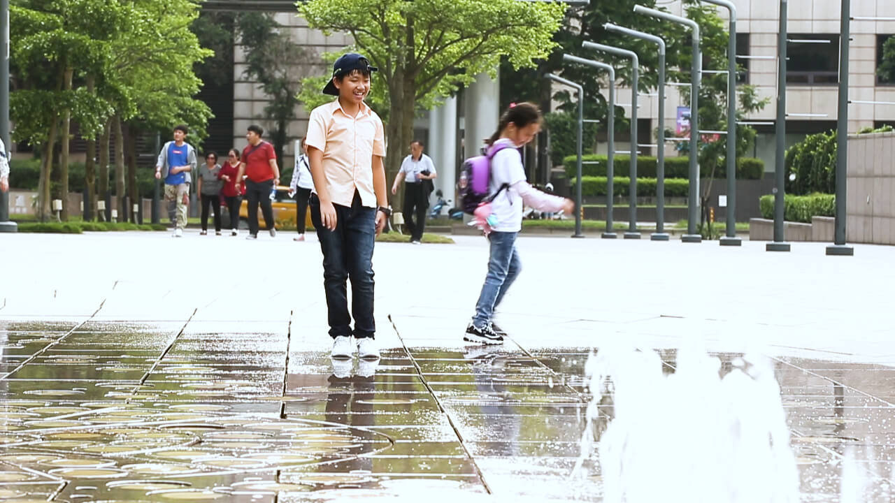
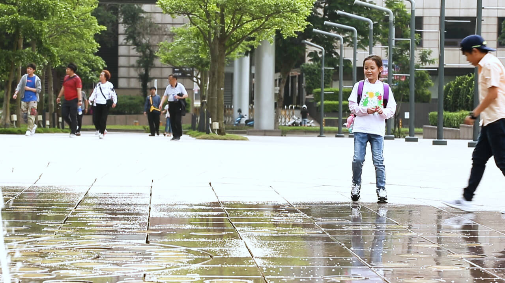
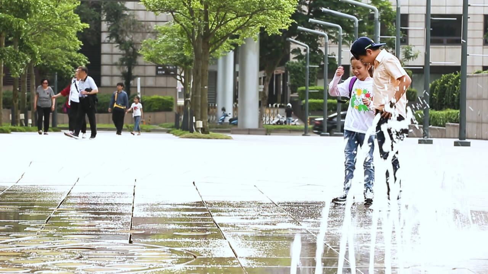
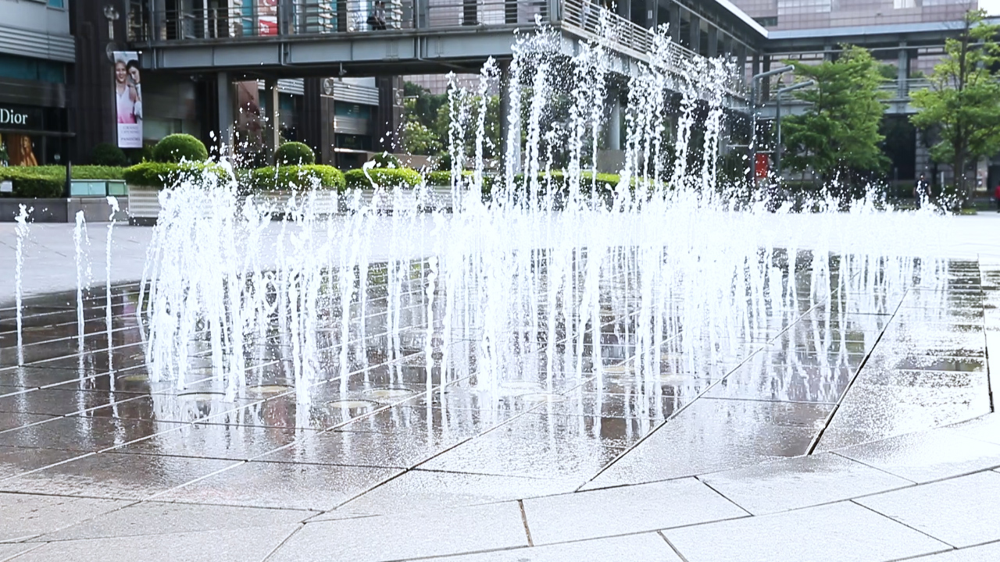
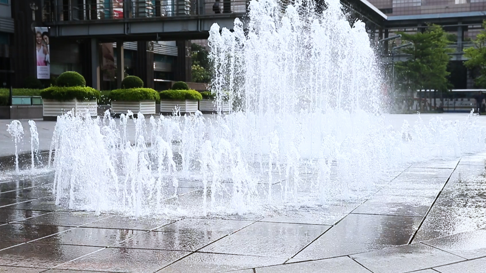

當寶島變熱島
幫都市退燒
都會區建築密集、巷道狹小，導致風進不來、熱出不去，溫度愈來愈高。
為了幫都市退燒，各縣市推出各式解方，包含規劃讓風走的廊道、實施綠建築獎勵等措施，要減緩熱島效應，並還給居民更舒適的居住環境。
熱島效應解方─風

都市溫度愈來愈高，不斷興建的高樓擋住風的去路，讓熱無法散去。

新北市藉由風廊道的設計，讓河面涼爽的風從5,700米的水岸吹進板橋江翠北側重劃區，為都市降溫、改善熱島效應。

熱島效應解方─風

留一條路讓風走
為了讓涼爽的風能夠吹進都會區，新北市首創「風廊環境管制」，限制「水岸第一排」建築的最大面寬，留一條路讓風走。
新北市在2013年訂定新北市板橋江翠北側地區都市設計審議原則，限制「水岸第一排」垂直河道面的建築最大面寬僅能蓋7成，且全區建築需退縮4公尺作為人行道，即風不只進得來，更留有走廊可深入城市。
為打造萬坪樹海、千里藍帶，建商常把公園、水岸第一排蓋好蓋滿，獨霸山河的景觀宅擋住了風，讓城市更炎熱。新北市政府率全國之先，在板橋江翠北側地區限制建築面寬，最多只能蓋到7成，剩下的空間讓路給風，甚至得模擬環境風場，藉此讓「熱島」降溫。
新北市政府在102年公布「新北市板橋（江翠北側地區）都市設計審議原則」，選定淡水河、新店溪與大漢溪交會的江翠北側重劃區，在102年正式實施；這片土地只有117公頃，只佔新北市區土地的千分之一，儘管範圍不大，卻是台灣個第一起針對河岸建築的風環境管制規範。
長期研究都市風廊道的成功大學建築系教授林子平指出，地表建築物越多，代表粗糙度越高，風速越弱，如果建築物蓋在風廊道上，就會阻礙都市氣候調節。
根據新北市的規定，為了讓河風能吹入都市，河岸建築要從矮胖變為瘦高，在江翠北側區域的建案，建物最大面寬不能大於基地面寬的70%，換句話說，如果基地寬度有100公尺，建築物寬度的總和得在70公尺以內；街廓第一排的高層建築，在都市設計審議時，還要提出環境風場模擬成果。
新北市城鄉局表示，限制河岸建築的寬度，保留30%以上的空間，希望拉大建築物的棟距，避免過去把水岸第一排蓋好蓋滿，影響整體景觀，也讓風能穿過水岸第一排建築，深入後排建築，來降低都市熱島效應。
由於江翠北側是一整塊總計超過80公頃重畫區，有長達5,700米的水岸線，新北市城鄉局以此作為風廊示範地，目前共有19個建案。參與其中建案的建築師林秀芬表示，建築物中間有空隙，有助疏通建築物的熱能。
長期研究都市風廊道的林子平指出，全台目前只有新北、台南沙崙特定區有要求留20公尺廊道，面對嚴峻的都市通風問題，國土計畫以及縣市政府對應的太少，目前建築有太陽日照數管制，或許未來建築基地也可針對通風管制，公園配置狹長型，有利風流動。
「西側被擋住，內部就越無可救藥」，林子平說，海線是迎風第一道牆，規範要越嚴格，才能讓風順利吹向陸地，大量灌木可能會降低城市風速，因此建議行道樹選擇樹冠高一點的樹種，他也指出，都市設計規劃應結合氣候狀況，以促進可永續發展的都市環境、以及更舒適的通風居住空間規劃設計。
熱島效應解方─綠
每到夏日，涼爽的林蔭大道下總是擠滿乘涼的民眾。
樹只要長得好，不僅能為民眾遮蔭，還能發揮「綠」島功效，為城市降溫。
熱島效應解方─綠
讓熱島變綠島
都市正在發燒，綠色植栽就像帖退燒藥，為城市帶來降溫效果。但台灣六都綠覆率不僅低於法定門檻10%，除高雄市外，其餘各都連5%都達不到，加上行道樹問題叢生，難怪都會區不斷飆高溫。學者呼籲政府妥善規劃都會區綠地及行道樹，讓樹長得好、長得大，才能發揮都市「綠」島的功效。
台灣都會區每人平均擁有的綠地面積，桃園市、新北市低於4平方公尺，台中市4.5平方公尺，台北市、台南市約5平方公尺，只有高雄市9.26平方公尺，遠低於國際標準建議的20-30平方公尺。六都綠地覆蓋率也低於都市計畫法規定的10%門檻，除高雄外，各都都低於5%。
都市中的行道樹數量龐大，原本都能調節微氣候，但因規劃不當、養護不佳，使得功效大打折扣。以台北市大安區兩處人行道為例，農委會林試所實測5月25日下午1-2點的人行道氣溫，當天台北測站下午1點的氣溫為31.6度，忠孝東路三段測得33.7度，仁愛路三段測得31.1度。
林試所副所長吳孟玲說，仁愛路行道樹總數3800多棵，樹種多元有榕樹、樟樹、楓香等，道路中央的分隔島寬廣，行道樹長得好，樹冠串連成涼爽的林蔭大道，能發揮降溫效果；反觀忠孝東路三段的行道樹只有一排，樹蔭不夠濃密，降溫效果打折扣。
「從樹穴到修剪方法，行道樹問題很多。」吳孟玲說，樹的樹冠有多大，樹穴就應該留多大，樹穴標準為樹腰直徑的10-15倍，至少要有2-3倍，但前項標準幾乎難有行道樹達標；修剪更是門學問，不能一律剃光頭、理平頭，下刀時更要避免破壞維管束，還要避免枝幹撕裂傷，以免腐朽菌入侵。
學者分析，行道樹的樹冠能阻擋太陽輻射，創造樹蔭空間，葉片的蒸散作用可吸收熱能，都能帶來降溫效果；樹木、植栽底層的土壤屬於透水層，比起會吸熱的不透水柏油、水泥鋪面，更能降溫；中研院研究也發現，綠地的環境效益與空間結構有關，完整、大型綠地比破碎化的土地更有功效，如果有多塊小型綠地，應想辦法串連起來，可發揮更高效益。
熱島效應解方─水
夏天高溫時，民眾懂得戲水消暑。
那麼如果能把溪流的水引入都市中，是不是也能讓都市戲水消暑，帶走大量的熱？
熱島效應解方─水
用水廊為都市降溫
若以基礎物理觀念「水在蒸發過程中會吸收周圍的熱量」出發，保留水體、營造水廊，成為降低都市熱島效應的有效途徑。
高雄學界倡議開闢都市水廊，水體蒸散降溫外，水流也會帶動風的流動。高雄鐵路地下化工程為高雄帶來「水綠園道」的契機，學者想像為高雄都會區織起水廊網絡，從高屏溪藉重力引水向西，打通曹圳道、後勁溼、愛河流域、鳳山溪加前鎮河水系，水起風生為城市降溫。
前屏東縣環保局長、高苑科大綠環境學程兼任講師魯台營說，在冷氣機還很遙遠的年代，小時候當教室熱的受不了，老師就喊：值日生來，在地上灑灑水！讓室溫得以稍降。都市水廊也是這個道理。「因為水在蒸發過程中會吸收周圍環境的熱量。」1公克水的蒸發，會吸收540卡的熱量，這也是為什麼水岸旁總是比較涼爽的原因。
魯台營表示，高雄學者約10年前提出打造高雄生態圳道的構想。高屏溪流域地形大致由東北向西南遞減，高屏溪與下游鳳山以西至出海口的水平落差約20公尺，可以利用「重力」引水，透過網狀渠道，流經整個都會區，然後出海，讓高雄真正成為「海綿城市」。
魯台營指出，在全台都會區可能只有高雄具有這樣的條件，這還是拜舊曹公圳道保留尚好之賜。高雄生態圳道若能完成，每天灌引30萬噸，水在不斷流動過程中，一定要蒸發，蒸發時會大量帶走熱，水廊並帶動風廊，為都市留下涼意。「河川渠道有淨化功能，但前提是一定要『流動』才行！」
填寫閱讀體驗問券連結：https://www.surveycake.com/s/KpQKN
  勞工高溫休息於法有據 醫籲落實勞檢 聯合筆記／走路有風的城市 超「綠」辦公樓 出差要買碳排費 減緩短暫強降雨致災情況 公私合作打造新北海綿城市